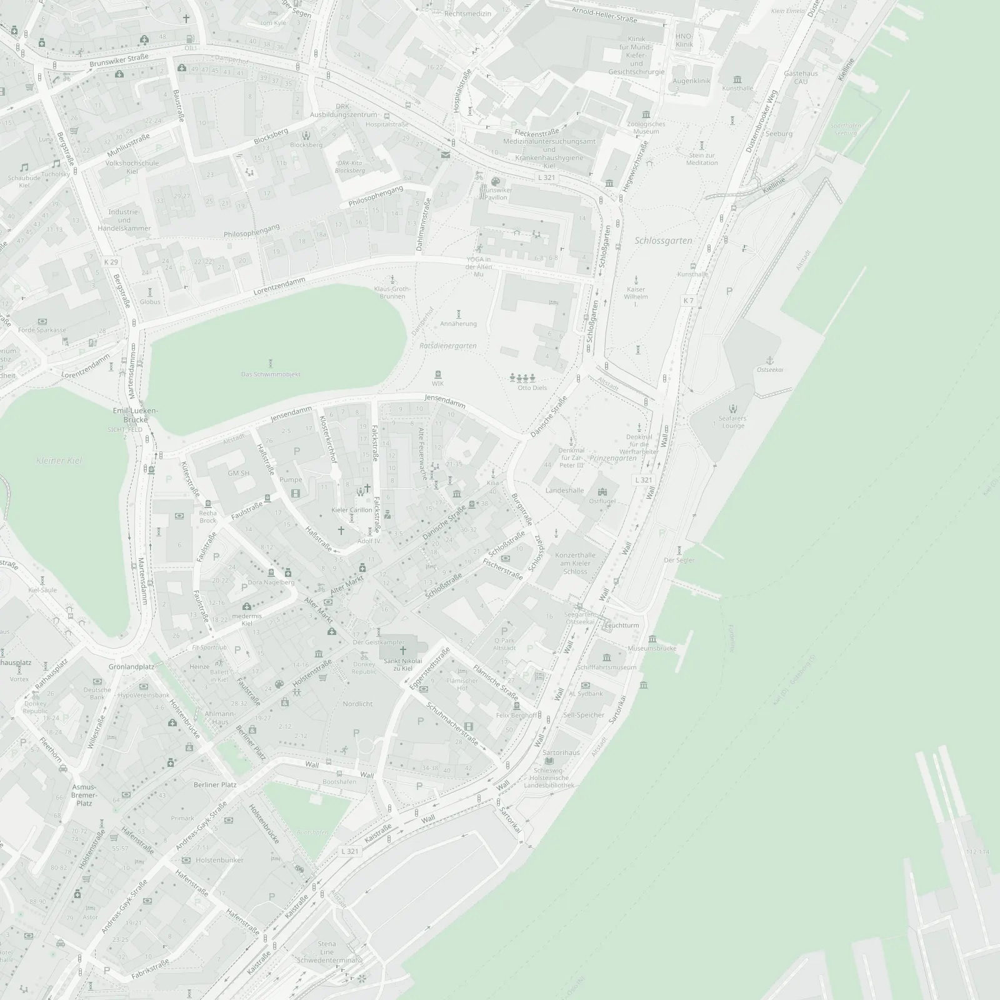

Zweitmeinung vor einer Operation
Ihnen wurde eine Operation an der Wirbelsäule empfohlen? Wir sehen uns Ihre Bilder und Befunde gemeinsam an, bevor Sie entscheiden.
Dazu anfragenNeurochirurgie in Kiel · Schwerpunkt Wirbelsäule
Dr. med. Christoph Manicke, Neurochirurg
Zweitmeinung zur Wirbelsäule: persönlich, verständlich, unabhängig.

Tippen Sie auf einen Wirbel: Jeder hat seine eigene Geschichte.
Beratung
Zum ganzen neurochirurgischen Fachgebiet, mit dem Schwerpunkt Wirbelsäule. Sie erfahren, welche Wege es gibt, ohne und mit Operation, und was jeweils dafür und dagegen spricht.
Ihnen wurde eine Operation an der Wirbelsäule empfohlen? Wir sehen uns Ihre Bilder und Befunde gemeinsam an, bevor Sie entscheiden.
Dazu anfragenAuch nach einem Eingriff ist eine Beratung möglich, etwa wenn Beschwerden geblieben oder neu aufgetreten sind.
Dazu anfragenWenn Rücken, Nacken oder Beine Beschwerden machen: eine ausführliche Einschätzung, woher sie kommen können und was helfen kann.
Dazu anfragenDie Neurochirurgie ist dort gefragt, wo Nerven, Nervenwurzeln oder das Rückenmark bedrängt werden. Fragen Sie gern auch außerhalb der Wirbelsäule.
Dazu anfragenÜber mich
Als die Zusage fürs Medizinstudium kam, war mein kleiner VW-Bus schon gepackt, Richtung Italien. Und hätte es mit der Medizin nicht geklappt? Dann wäre ich heute wohl Tischler.
Mein Weg

Praxis
In der Kieler Innenstadt, zwischen Altem Markt und Schloss. Der 4. Stock ist mit dem Aufzug erreichbar.
„Sie entscheiden. Ich gebe Ihnen die Orientierung dafür.“
Fragen
Die Praxis ist eine Privatpraxis für privat Versicherte und Selbstzahler. Gesetzlich Versicherte können als Selbstzahler kommen.
Schreiben Sie mir über das Anfrageformular. Ich melde mich persönlich bei Ihnen, und wir finden in Ruhe einen Termin.
Abgerechnet wird nach der Gebührenordnung für Ärzte (GOÄ). Ob Ihre Versicherung die Kosten übernimmt, klären Sie am besten vorher mit ihr.
Ihre aktuellen MRT- oder CT-Bilder auf CD oder als Link, Arztbriefe und Befunde, die schriftliche OP-Empfehlung, falls es eine gibt, und eine Liste Ihrer Medikamente.
Ja. Auch nach einer bereits durchgeführten Operation ist eine Beratung möglich, etwa wenn Beschwerden geblieben oder neu aufgetreten sind.
Beide behandeln die Wirbelsäule. Die Neurochirurgie kommt vom Nervensystem her: Sie ist dort gefragt, wo Nervenwurzeln oder Rückenmark bedrängt werden.
Die Praxis liegt im 4. Stock der Burgstraße 2 und ist mit einem Aufzug erreichbar.
Bitte senden Sie Gesundheitsdaten nicht unverschlüsselt per E-Mail. Schreiben Sie in Ihrer Anfrage, dass Sie Unterlagen haben. Ich melde mich mit einem sicheren Weg.
Schreiben Sie mir kurz, worum es geht. Ich melde mich persönlich bei Ihnen, und wir finden in Ruhe einen Termin.